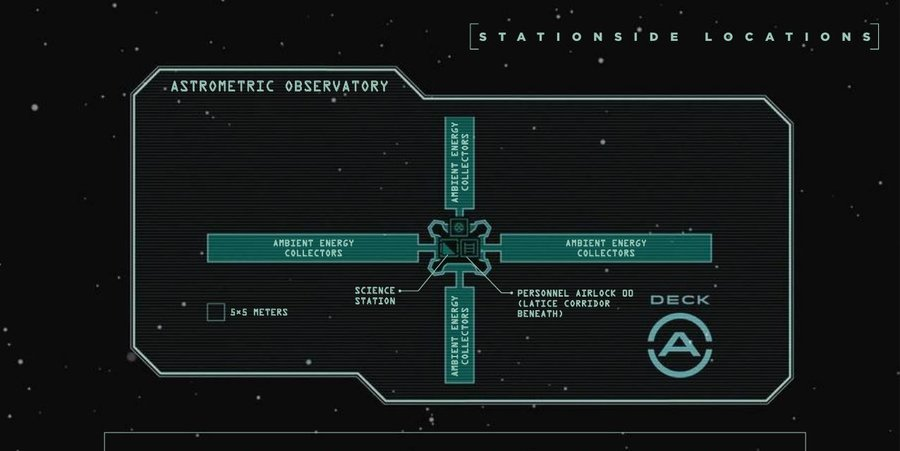
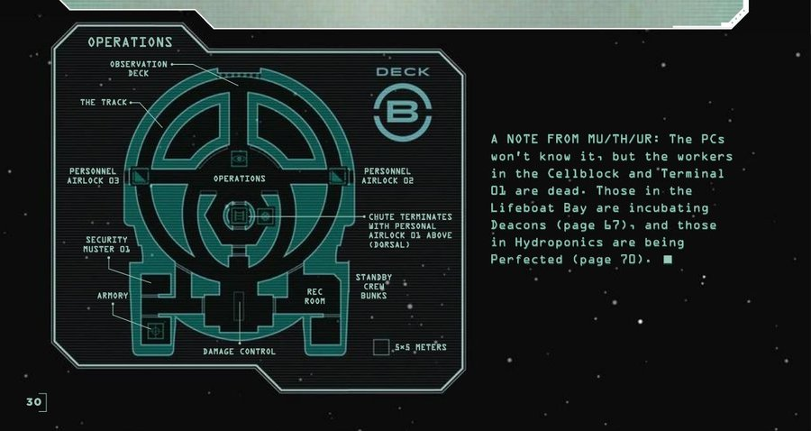
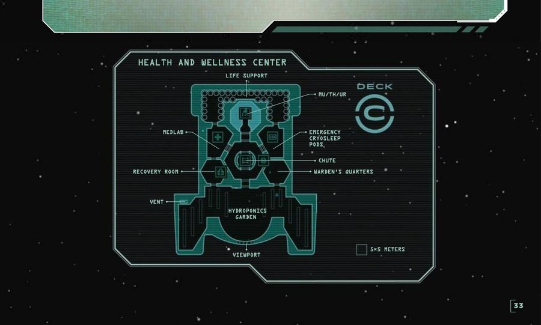
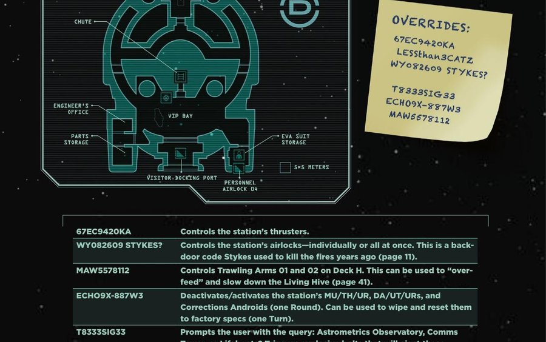
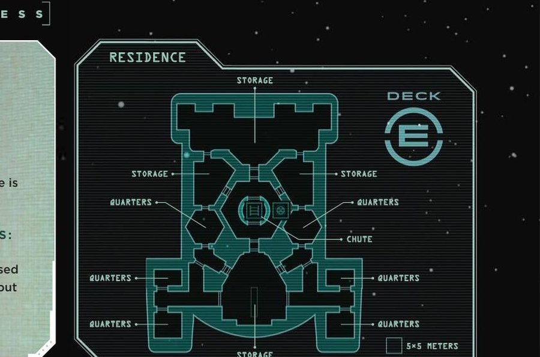
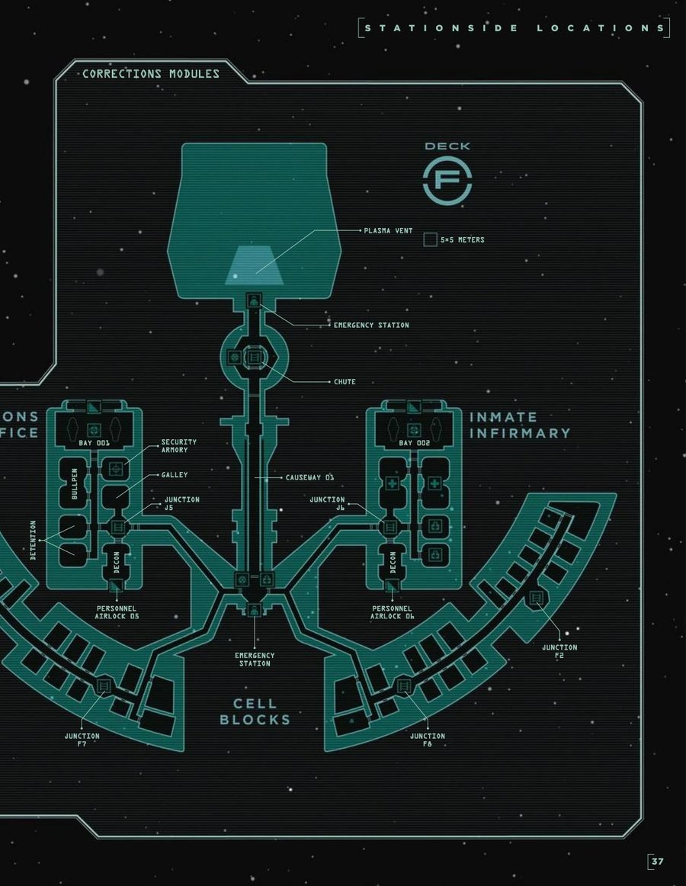
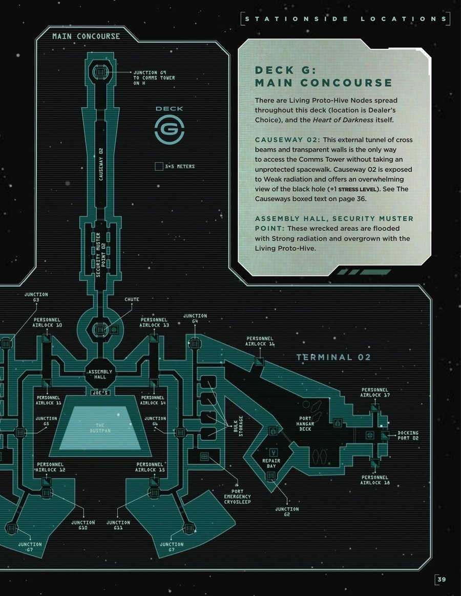
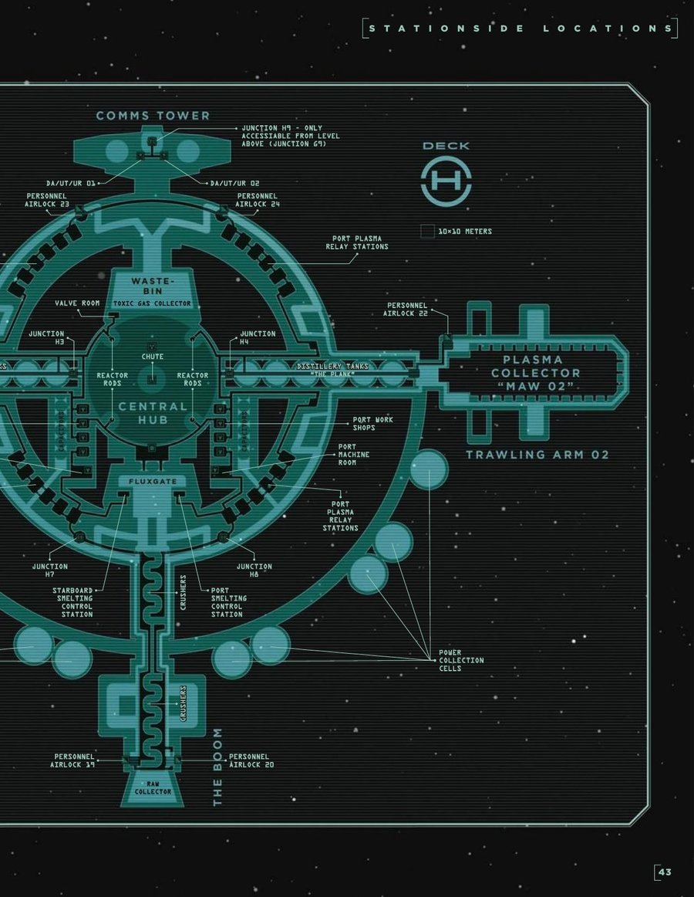
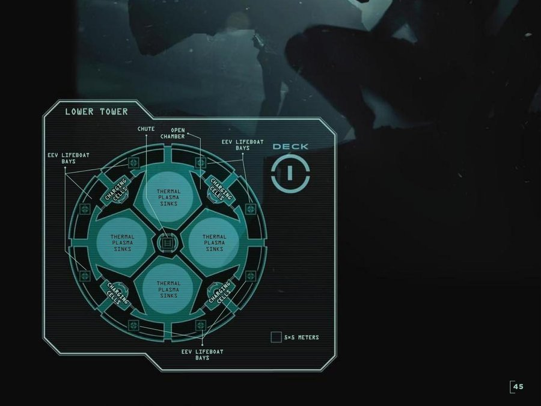
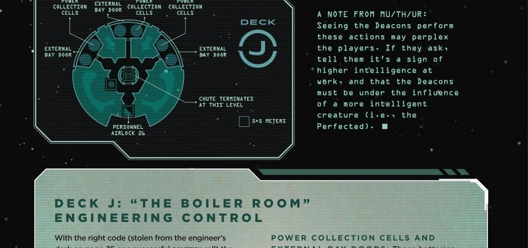

Hlídkový věžák přidaný k původní stanici. Sedí na vrcholu Erebos. Přístup přes Lattice Corridor — spacewalk přes kovovou mřížovou šachtu.

Kognitivní centrum Erebos. Žádné stopy Living Proto-Hive. Červené nouzové osvětlení se kříží s bledě modrým světlem z mnoha obrazovek. Jeden Fulfremmen se tu potuluje a pozoruje vše s mimozemskou fascinací — je to Perfect Aly, přeměněná teta kapitánky Lugarové.

Hydroponická zahrada dominuje palubě. Navržena pro psychickou pohodu posádky — teď přerostlá Living Proto-Hive. Zde se nachází MU/TH/UR mainframe a Medlab.

Návštěvnická zóna Erebos, vzdálená od vězeňské části. Astrophysics Lab zde dostává data ze sensorů, Observatoře a Comms Tower.

Obytná paluba posádky — meteorit ji prorazil a zdemoloval. Airlock ke Chute je funkční.

Vězeňské moduly s rozsáhlými požárními škodami na portové straně. Zde sídlí Warden Stykes a Cook Hobbs.

Living Proto-Hive Nodes rozptýleny po celé palubě. Starboard Hangar Deck ukrývá Heart of Darkness — Cheiron.

Největší část stanice — temné, kavernózní, rezavé průmyslové centrum. Plné rafinačního zařízení. Tvrdě zasaženo pádem Cetorhiny — portová strana kompletně v plazmatickém ohni.

Rozsáhlé, osamělé prostory plné Plasma Tanks a automatizovaných dobíječek baterií. "The Sticks" — nikdo sem normálně nechodí. Čtvrt kilometru vysoká komora, vše se ozvěnou — není jasné odkud zvuk přichází. Slabá radiace.

Nejspodnější úroveň stanice. Chute zde končí. Engineering Control s externím airlockem.
